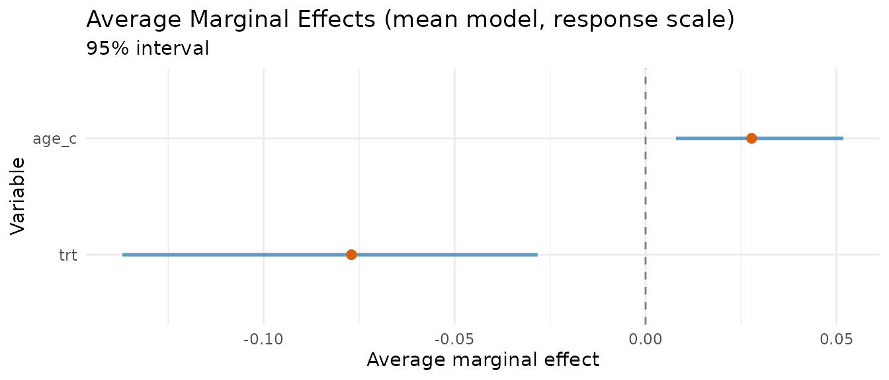
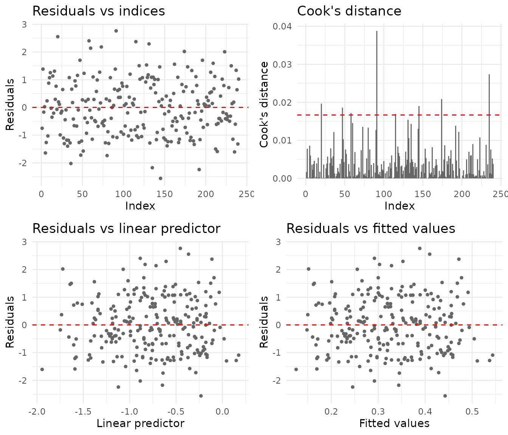
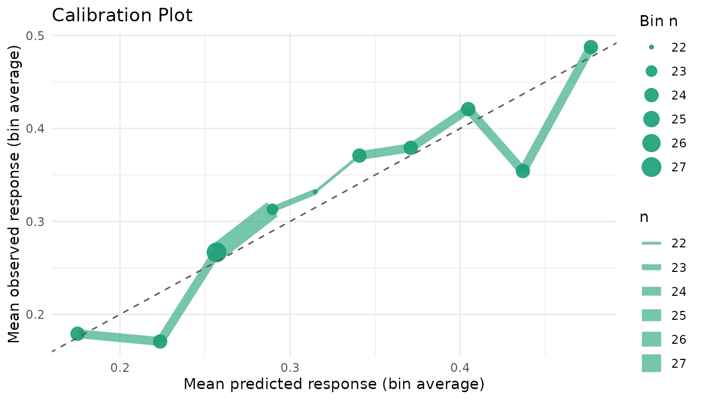
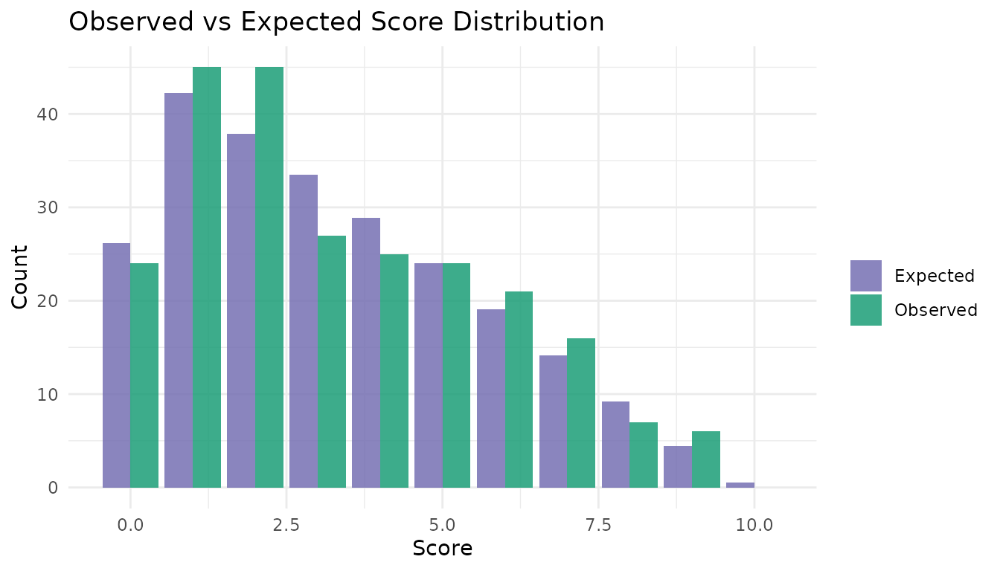
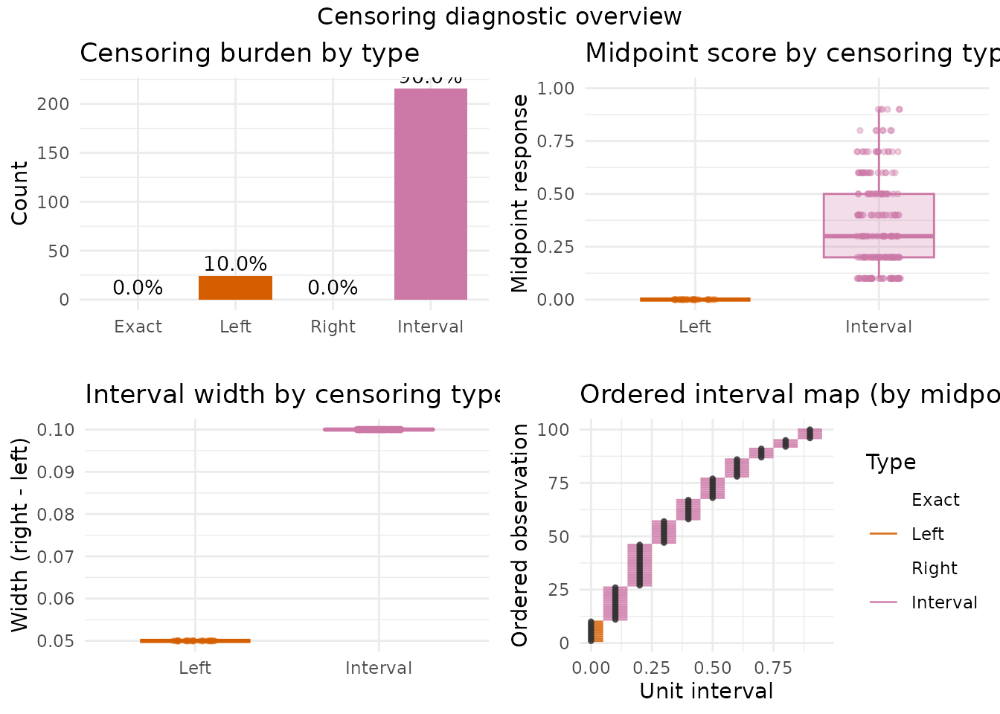
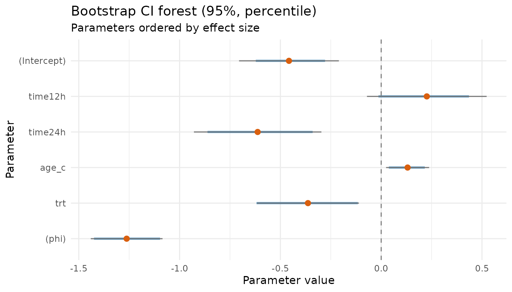

Analyst tools: predictions, residuals and validation
Source:vignettes/brs-analyst-tools.Rmd
brs-analyst-tools.RmdThis vignette shows the post-estimation tools for brs()
fits: predictions on the mean and score scales, contrasts with standard
errors, marginal effects, residuals, plots, the parametric bootstrap,
cross-validation and summary tables. The model itself is described in
vignette("brs-intro"); the mixed-model versions of these
tools are in vignette("brs-mm"). Small numbers of
replicates and folds keep the vignette fast, so the results are
illustrative.
Data and fit
Simulated NRS-11 scores of 240 patients at three post-operative times, with age and a treatment indicator:
set.seed(2023)
nrs <- data.frame(
time = factor(rep(c("6h", "12h", "24h"), each = 80),
levels = c("6h", "12h", "24h")),
age = round(rnorm(240, 50, 12)),
trt = rbinom(240, 1, 0.5)
)
nrs$age_c <- (nrs$age - 50) / 10
eta <- -0.6 + c(0, 0.5, -0.3)[nrs$time] + 0.2 * nrs$age_c - 0.5 * nrs$trt
shp <- brs_repar(mu = plogis(eta), phi = 0.2, repar = 2)
nrs$y <- round(10 * rbeta(240, shp$shape1, shp$shape2))
fit <- brs(y ~ time + age_c + trt, data = nrs, ncuts = 10)
fit
#>
#> Call:
#> brs(formula = y ~ time + age_c + trt, data = nrs, ncuts = 10)
#>
#> Coefficients (mean model with logit link):
#> (Intercept) time12h time24h age_c trt
#> -0.4574 0.2262 -0.6128 0.1310 -0.3633
#>
#> Coefficients (dispersion model for sigma with logit link):
#> (phi)
#> -1.2626Predictions
predict() returns, by type:
type |
value |
|---|---|
"response" (default) |
the mean on |
"link" |
the linear predictor of the mean |
"precision" |
the second parameter on its own scale (the dispersion
under repar = 2) |
"variance" |
|
"quantile" |
quantiles of
at the probabilities at
|
"score" |
the latent score at
(
under "mid") |
"expected_score" |
the expected recorded score |
nd <- data.frame(time = c("6h", "12h", "24h"), age_c = 0, trt = 0)
cbind(nd,
mu = predict(fit, nd),
score = predict(fit, nd, type = "score"),
expected_score = predict(fit, nd, type = "expected_score"))
#> time age_c trt mu score expected_score
#> 1 6h 0 0 0.3875968 3.875968 3.873384
#> 2 12h 0 0 0.4424592 4.424592 4.423637
#> 3 24h 0 0 0.2553673 2.553673 2.539366
predict(fit, nd, type = "quantile", at = c(0.25, 0.5, 0.75))
#> q_0.25 q_0.5 q_0.75
#> [1,] 0.19959732 0.3644270 0.5557468
#> [2,] 0.25391890 0.4305352 0.6207733
#> [3,] 0.08600763 0.2067570 0.3832926brs_predict_scoreprob() gives the probability of each
score, as a matrix or in long format:
round(brs_predict_scoreprob(fit, newdata = nd), 3)
#> score_0 score_1 score_2 score_3 score_4 score_5 score_6 score_7 score_8
#> [1,] 0.042 0.134 0.152 0.151 0.141 0.124 0.102 0.077 0.051
#> [2,] 0.023 0.095 0.127 0.140 0.142 0.135 0.121 0.100 0.072
#> [3,] 0.158 0.235 0.180 0.139 0.105 0.076 0.052 0.032 0.017
#> score_9 score_10
#> [1,] 0.024 0.003
#> [2,] 0.039 0.005
#> [3,] 0.005 0.000
head(brs_predict_scoreprob(fit, newdata = nd, scores = 0:2, format = "long"))
#> id score prob
#> 1 1 0 0.04181922
#> 2 1 1 0.13358466
#> 3 1 2 0.15198673
#> 4 2 0 0.02250122
#> 5 2 1 0.09524590
#> 6 2 2 0.12691577Score-scale quantities with standard errors
brs_marginal() returns score probabilities
(type = "prob"), expected scores
("expected_score") or exceedance probabilities
("exceed") with delta-method standard errors and Wald
intervals, computed on the logit scale for probabilities and expected
scores so they stay in range (contrasts use Wald intervals on the
natural scale). contrast gives differences between pairs of
rows of newdata; c(i, j) is row i
minus row j:
brs_marginal(fit, nd, type = "exceed", k = 4)
#> time age_c trt row k estimate std.error lower upper
#> 1 6h 0 0 1 4 0.5211590 0.05244215 0.4189245 0.6216513
#> 2 12h 0 0 2 4 0.6149118 0.05076843 0.5119463 0.7085225
#> 3 24h 0 0 3 4 0.2885185 0.04173023 0.2139919 0.3765655
brs_marginal(fit, nd, type = "expected_score",
contrast = rbind(c(2, 1), c(3, 1)))
#> contrast row1 row2 estimate std.error lower upper
#> 1 2 - 1 2 1 0.5502529 0.3675773 -0.1701853 1.2706912
#> 2 3 - 1 3 1 -1.3340178 0.3497652 -2.0195451 -0.6484905With se_method = "simulation", the standard errors and
percentile intervals come from n_sim draws of the
parameters (set a seed first):
set.seed(1)
brs_marginal(fit, nd[1:2, ], type = "expected_score", contrast = c(2, 1),
se_method = "simulation", n_sim = 200)
#> contrast row1 row2 estimate std.error lower upper
#> 1 2 - 1 2 1 0.5502529 0.3636081 -0.1616128 1.275677Average marginal effects
brs_marginaleffects() gives the average marginal effect
of each numeric covariate on the mean (type = "response")
or on the linear predictor ("link"): a central difference
for continuous covariates and the discrete change for 0/1 covariates,
averaged over the rows. Intervals use n_sim draws from the
asymptotic normal law of the estimates. Factors are not included; code a
factor as 0/1 dummies to get its contrast, or use
brs_marginal() contrasts as above.
set.seed(2)
ame <- brs_marginaleffects(fit, n_sim = 100, keep_draws = TRUE)
ame
#> variable ame std.error ci.lower ci.upper model type n
#> 1 age_c 0.02778234 0.01051475 0.007953519 0.05177403 mean response 240
#> 2 trt -0.07703774 0.02756216 -0.137031764 -0.02828654 mean response 240Effects on
are on
;
multiply by
for the score scale under "mid".
autoplot.brs_marginaleffects(ame, type = "forest")
Residuals
residuals() offers the types below. The randomized
quantile residuals ("rqr", Dunn and Smyth, 1996) are
standard normal under the model whatever the censoring and are the
recommended type for diagnostics.
type |
definition |
|---|---|
"response" (default) |
yt minus the fitted mean |
"pearson" |
response residual over the fitted SD |
"deviance" |
beta deviance residual at yt
|
"rqr" |
, uniform on , with 0 and 1 at the borders |
"weighted", "sweighted"
|
residuals on the scale (Espinheira et al., 2008) |
"cell_deviance" |
from the probability of the observed cell |
All types except "rqr" and "cell_deviance"
use one point of the cell, yt:
under "mid" (so the border scores sit at
and
)
and the cell center under "right"/"left". They
are unreliable at the border scores. The cell deviance residuals are
signed by the observed minus the expected score; for score data their
squares add up to
:
Plots
plot() draws up to six diagnostic panels of quantile
residuals (four by default) in base graphics or, with
gg = TRUE, ggplot2:
plot(fit, gg = TRUE)
autoplot.brs() adds a calibration plot, the predicted
score distribution, fitted CDFs and residuals by censoring type:
autoplot.brs(fit, type = "calibration")
autoplot.brs(fit, type = "score_dist")
brs_cens() summarizes the censoring types of a fit:
brs_cens(fit, gg = TRUE)
Parametric bootstrap
brs_bootstrap() draws new responses at the fitted
shapes, re-coarsens them on the fit’s cells and refits the original
formula, R times. It returns percentile, basic, normal or
BCa intervals next to the Wald intervals; failed refits are counted and
printed. Use R of at least 199 in practice; 49 is used here
for speed.
set.seed(3)
boot <- brs_bootstrap(fit, R = 49, keep_draws = TRUE)
boot
#> Bootstrap confidence intervals
#> Level: 0.95 | CI: percentile | Successful replicates: 49 / 49 | Attempts: 49
#> Failed replicates: 0 (0.0% of attempts)
#>
#> parameter estimate se_boot ci_lower ci_upper mcse_lower
#> 1 (Intercept) -0.4574253 0.10590803 -0.62188294 -0.2784529 0.014002540
#> 2 time12h 0.2262380 0.13772964 -0.01369944 0.4354400 0.021238725
#> 3 time24h -0.6127630 0.14066571 -0.86158613 -0.3400873 0.042576014
#> 4 age_c 0.1310349 0.05142949 0.03795532 0.2162490 0.009765608
#> 5 trt -0.3632532 0.13790026 -0.61820543 -0.1155792 0.034133318
#> 6 (phi) -1.2625569 0.08818543 -1.42443996 -1.0969682 0.014821331
#> mcse_upper wald_lower wald_upper level
#> 1 0.039331473 -0.70499315 -0.2098574 0.95
#> 2 0.021264852 -0.07056248 0.5230386 0.95
#> 3 0.024659678 -0.92888949 -0.2966365 0.95
#> 4 0.007618617 0.02425109 0.2378187 0.95
#> 5 0.030051529 -0.61610640 -0.1103999 0.95
#> 6 0.031921649 -1.44051168 -1.0846021 0.95
autoplot.brs_bootstrap(boot, type = "ci_forest")
Cross-validation
brs_cv() runs repeated k-fold cross-validation. For each
held-out fold it reports log_score, the mean log
probability of the held-out observations (higher is better), and the
RMSE and MAE of yt around the predicted mean:
set.seed(4)
cv_full <- brs_cv(y ~ time + age_c + trt, data = nrs, k = 5, ncuts = 10)
set.seed(4)
cv_time <- brs_cv(y ~ time, data = nrs, k = 5, ncuts = 10)
cv_full
#> repeat fold n_train n_test log_score rmse_yt mae_yt converged error
#> 1 1 1 192 48 -2.028631 0.2001736 0.1618597 TRUE <NA>
#> 2 1 2 192 48 -2.168236 0.2422893 0.2152613 TRUE <NA>
#> 3 1 3 192 48 -2.185514 0.2470601 0.2150859 TRUE <NA>
#> 4 1 4 192 48 -2.076509 0.2360192 0.1934935 TRUE <NA>
#> 5 1 5 192 48 -2.040262 0.2026502 0.1702655 TRUE <NA>
c(full = mean(cv_full$log_score), time_only = mean(cv_time$log_score))
#> full time_only
#> -2.099831 -2.122464Resetting the seed gives both models the same folds.
Tables
brs_est() gives the coefficient table,
brs_gof() the fit criteria and brs_table() a
comparison of several fits with their censoring counts:
brs_est(fit)
#> variable estimate se z_value p_value ci_lower
#> 1 (Intercept) -0.4574253 0.12631247 -3.621379 2.930372e-04 -0.70499315
#> 2 time12h 0.2262380 0.15143162 1.493995 1.351770e-01 -0.07056248
#> 3 time24h -0.6127630 0.16129199 -3.799091 1.452277e-04 -0.92888949
#> 4 age_c 0.1310349 0.05448253 2.405081 1.616889e-02 0.02425109
#> 5 trt -0.3632532 0.12900912 -2.815717 4.866855e-03 -0.61610640
#> 6 (phi) -1.2625569 0.09079493 -13.905588 5.858308e-44 -1.44051168
#> ci_upper
#> 1 -0.2098574
#> 2 0.5230386
#> 3 -0.2966365
#> 4 0.2378187
#> 5 -0.1103999
#> 6 -1.0846021
fit_time <- brs(y ~ time, data = nrs, ncuts = 10)
brs_table(full = fit, time_only = fit_time, sort_by = "AIC")
#> model nobs npar logLik AIC BIC pseudo_r2 exact left right
#> 1 full 240 6 -498.8148 1009.630 1030.513 0.1668 0 24 0
#> 2 time_only 240 4 -506.3028 1020.606 1034.528 0.1013 0 24 0
#> interval prop_exact prop_left prop_right prop_interval
#> 1 216 0 0.1 0 0.9
#> 2 216 0 0.1 0 0.9References
- Dunn, P. K., and Smyth, G. K. (1996). Randomized quantile residuals. Journal of Computational and Graphical Statistics, 5(3), 236–244.
- Espinheira, P. L., Ferrari, S. L. P., and Cribari-Neto, F. (2008). On beta regression residuals. Journal of Applied Statistics, 35(4), 407–419.
- Lopes, J. E. (2023). Modelos de regressão beta para dados de escala. Master’s dissertation, Universidade Federal do Paraná, Curitiba. https://hdl.handle.net/1884/86624